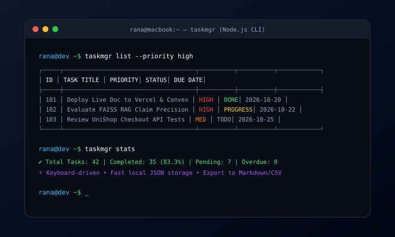

Awesome CLI Task Manager

Main Technology Stack
Node.js
JavaScript (ES6+)
CLI / Terminal UI
JSON Storage
Chalk / CLI Tables
Commander.js
Project Overview
Awesome CLI Task Manager is a keyboard-driven command-line application built for developers who prefer staying inside their terminal. It offers full CRUD operations, hierarchical priorities, tag categorization, deadline tracking, search filtering, task performance analytics, and structured data export.
Key Features
- Fast Terminal Commands: Add, edit, check off, and delete tasks in milliseconds via intuitive subcommands and flags.
- Priority & Status Filtering: Color-coded tables distinguishing High, Medium, and Low priorities with due date alerts.
- Tag & Category Organization: Group tasks by project tags (e.g., `#fullstack`, `#database`, `#bugfix`).
- Productivity Metrics: Generates completion percentages, pending counts, and velocity metrics directly in the shell.
- Lightweight Local Storage: Atomic JSON persistence with zero external database dependencies.
- Data Export: One-command export to Markdown and CSV formats for reporting.
Engineering Challenges & Solutions
- Terminal Formatting Consistency: Formatted table borders and text padding to handle variable terminal window dimensions and ANSI color codes gracefully.
- Data Integrity: Used atomic file write operations to prevent file corruption during sudden terminal exits or shell signals.
 View GitHub Code
View GitHub Code